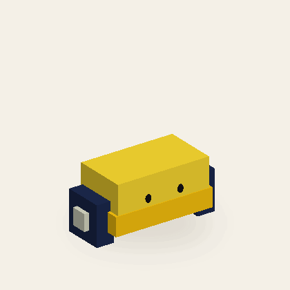
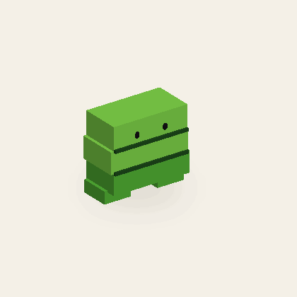
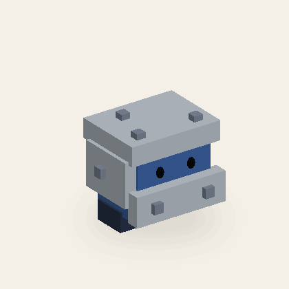
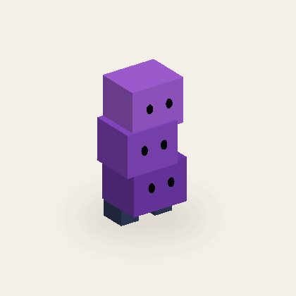
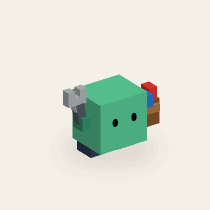
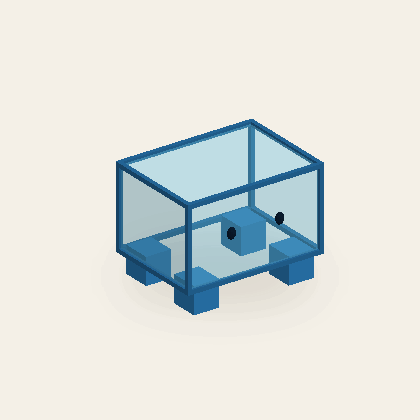
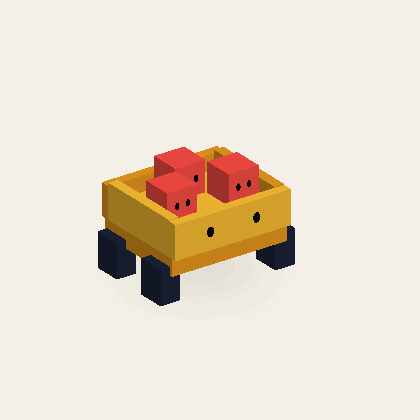
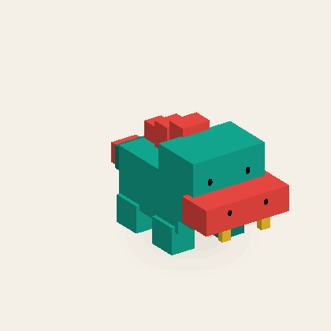
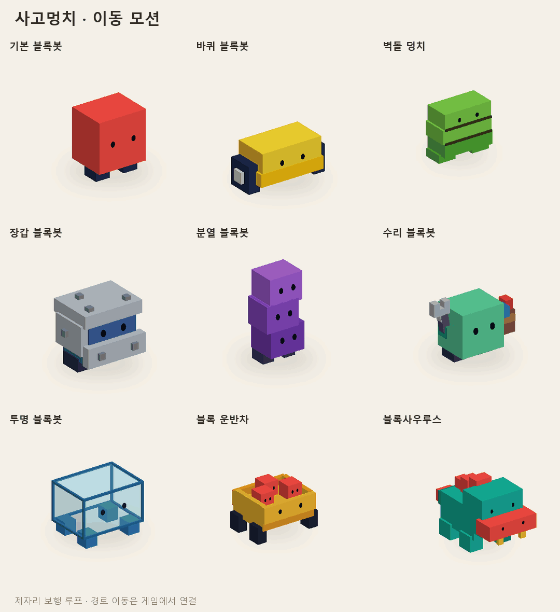

E01 / ENEMY MOTIONS
기본 블록봇
산호빛 정육면체와 짧은 남색 발

이동짧은 두 발로 통통 걸으며 몸을 좌우로 기울여요.
아홉 적 캐릭터의 이동·피격·쓰러짐 모션을 같은 카메라에서 비교하세요.
미리보기를 누르면 드래그·속도·프레임 탐색이 가능한 오프라인 3D 뷰어가 열립니다.
산호빛 정육면체와 짧은 남색 발
이동짧은 두 발로 통통 걸으며 몸을 좌우로 기울여요.
낮은 노랑 몸체와 네모 바퀴

이동네모 바퀴가 돌 때 차체도 작게 들썩여요.
넓은 초록 벽돌 3단과 굵은 발

이동큰 발로 느릿하게 쿵쿵 걷고 벽돌 층이 흔들려요.
세 장갑판과 좁은 눈 틈

이동장갑을 두른 몸으로 짧게 좌우로 걸어요.
살짝 어긋난 세 얼굴 큐브

이동세 블록이 서로 엇박자로 흔들리며 걸어요.
사각 U자 렌치와 부품 주머니

이동짧은 발로 걷고 렌치 팔이 까딱거려요.
비치는 몸통 · 짙은 파랑 테두리 · 짧은 네 발

이동투명 몸통을 유지하며 네 발로 살금살금 걸어요.
졸린 눈의 황토색 수레와 안에 탄 산호빛 꼬마 블록봇 셋

이동네 바퀴가 굴러가고 짐칸의 꼬마들이 통통 튀어요.
청록색 네모 공룡 몸과 산호빛 넓은 주둥이·등 블록

이동네 다리를 번갈아 내딛고 머리와 꼬리가 묵직하게 흔들려요.

카드 위 버튼으로 같은 모션을 아홉 캐릭터에 한 번에 적용할 수 있습니다.
모든 동작은 고정된 파트의 위치·회전·크기·표시 상태를 절차적으로 재생합니다. 뷰어와 파일은 네트워크 연결 없이 열립니다.
Roblox Studio 가져오기와 게임 로직 연결은 README의 범위를 확인하세요.